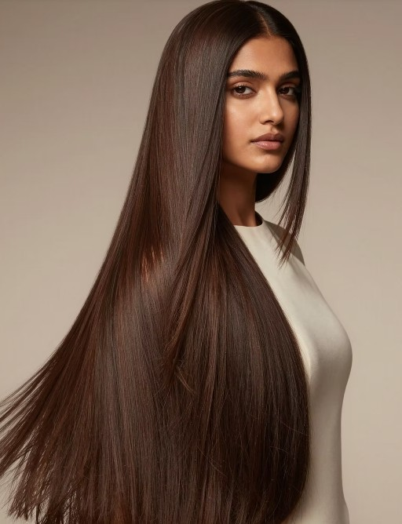
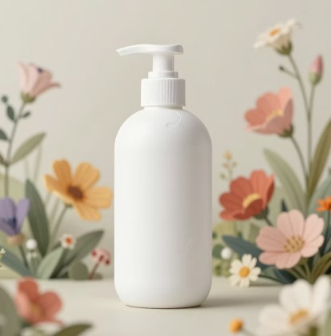
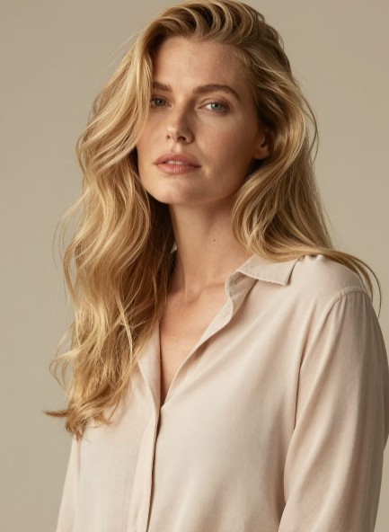
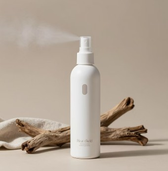
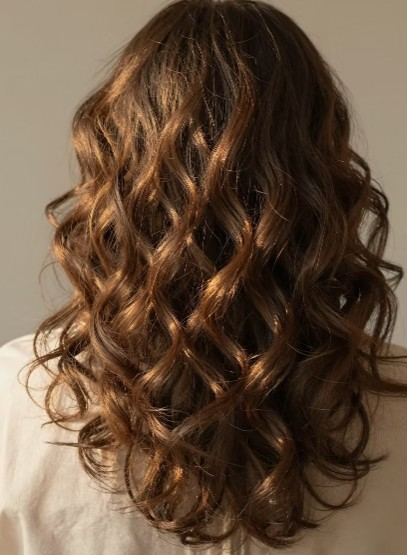
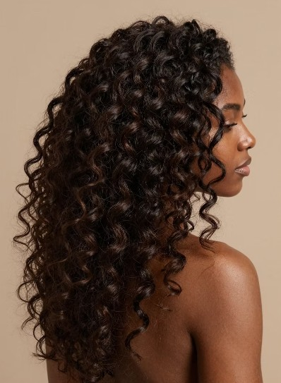

Straight hair becomes greasy faster and benefits from a healthy routine: cleansing, conditioning, oils or hair masks, protection and styling, and regular trimming.
Use sulfate-free shampoo to remove excess oil while protecting natural oils. Conditioner restores moisture, smoothness, and shine. Oils and hair masks protect against dryness and breakage.
Heat protectant is essential before styling tools. Regular trims every 6–8 weeks help prevent split ends and keep hair healthy and strong.

Recommended oils include Gisou Honey-Infused Hair Oil, Mise en Scene Hair Serum, Innersense Harmonic Treatment Oil, and Kérastase Elixir Ultime.
Applying oil before shampooing helps retain moisture, strengthens hair, and protects strands from harsh products.

Wavy hair sits between straight and curly hair. A moisturizing sulfate-free shampoo helps remove build-up while maintaining hydration.
Use hydrating conditioner and gently detangle with fingers or a wide-tooth comb. Avoid rough towel drying to reduce frizz.
Styling usually includes leave-in conditioners, mousse, styling creams, and scrunching for wave definition.

Recommended styling products: Bumble and Bumble Curl Defining Cream, RIZOS CURLS Curl Defining Cream, OUAI Wave Spray, and OUAI Air Dry Foam.

Curly hair needs moisture-rich shampoo and careful conditioning. Focus on scalp cleansing while protecting natural oils.
Apply conditioner mid-length to ends and detangle gently. Cold to lukewarm water helps preserve moisture.
Styling products may include curl creams, leave-ins, gels, mousses, and finger coiling for curl definition.
Recommended curly hair products: Moroccan Curl Cream, Not Your Mother’s Curl Talk, Blue Skala, and OGX Mousse.

Coily hair (Type 4) is naturally fragile and needs deep hydration. Use sulfate-free shampoo and rich deep conditioner regularly.
LOC/LCO method (Liquid, Oil, Cream) helps lock in moisture. Protective styling and silk protection at night are essential.
Recommended products: Shea Moisture Raw Shea Masque, Camille Rose Moisture Milk, Mielle Rosemary Mint Oil, and TGIN Honey Miracle Mask.